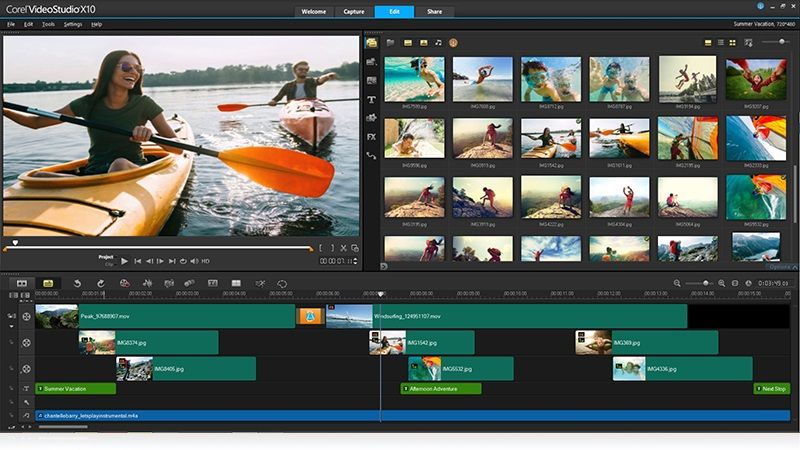

Picture Video Maker 📷- How to Make a Video from Photos Easily
 Store Support Center How-tos Blog My Account en Back Select your language English Deutsch Français Italiano Español Português Nederlands Čeština Dansk Norsk Svenska Türkçe Polski 日本語 Русский عربي 简体中文 한국어 繁體中文 Magyar ไทย עברית Română Ελληνικά Video Clips mobile Edit videos on your mobile device Back Android iOS Unlimited new Get all Movavi programs and effects in one bundle Back Windows Video Suite new Use everything you need to edit videos Back Windows MacOS Video Editor Quickly edit any video Back Windows MacOS Unlimited new Get all Movavi programs and effects in one bundle Back Windows Video Suite new Use everything you need to edit videos Back Windows MacOS Video Editor Quickly edit any video Back Windows MacOS Video Editor Plus Get more editing options Back Windows MacOS Business Suite new Create videos for your business Back Windows Video Editor 360 Edit panoramic videos Back Windows Video Converter new Convert any media file to any format Back Windows MacOS Slideshow Maker Create slideshows Back Windows MacOS PPT Converter Create videos from PPT presentations Back Windows Clips mobile Edit videos on your mobile device Back Android iOS Effects Store new Try a variety of titles, stickers, and transitions Stock Video Video footage collection Stock Audio Audio samples collection Stock Photos Image collection Screen Recording Unlimited new Get all Movavi programs and effects in one bundle Back Windows Screen Recorder new Easily capture screens Back Windows MacOS Gecata by Movavi new Record your gameplay Back Windows Effects Store new Try a variety of titles, stickers, and transitions Stock Video Video footage collection Stock Audio Audio samples collection Stock Photos Image collection Photo Unlimited new Get all Movavi programs and effects in one bundle Back Windows Picverse new Quickly edit any image Back Windows MacOS Slideshow Maker Create slideshows Back Windows MacOS Photo Manager Keep your photos organized Back Windows MacOS Photo Focus Blur image elements Back Windows MacOS Photo DeNoise Denoise any photo Back Windows MacOS Picverse mobile Edit photos on your mobile device Back Android iOS Effects Store new Try a variety of titles, stickers, and transitions Stock Audio Audio samples collection Stock Photos Image collection For Work PDFChef Scanner mobile Scan and share documents on your devices Back iOS Unlimited new Get all Movavi programs and effects in one bundle Back Windows Business Suite new Create videos for your business Back Windows Video Editor Plus Get more editing options Back Windows MacOS Screen Recorder new Record screens, improve workflow Back Windows MacOS Video Converter new Convert any media file to any format Back Windows MacOS Picverse new Quickly edit any image Back Windows MacOS PDFСhef by Movavi View, edit, and organize PDFs Back Windows MacOS Slideshow Maker Create slideshows Back Windows MacOS PDFChef Scanner mobile Scan and share documents on your devices Back iOS Effects Store new Try a variety of titles, stickers, and transitions Work-from-Home Software Get productive with our apps For Education Movavi Academic Program Video technologies for effective trainingWe use cookies to improve the services we offer you. By continuing to browse this site, you consent to keep them in accordance with our Privacy Policy .
Back to All How-Tos Movavi Video Editor Buy Now Buy Now Download for Free Download for FreeWant to make a video from pictures?
Try Movavi Video Editor!
Edit and enhance videos easily Add stylish transitions, titles, and filters Stabilize and reverse video, equalize sound, and moreDownload the program and follow the instructions below
Download for Free Download for FreeBy clicking the button, you’re downloading the free version of Movavi Video Editor.*
Get it on Google Play Download on the App StoreHow to Use Movavi's Picture Video Maker
Edited by Pat Bitton
September 24, 2019
Ever tried to create a movie from photos? This can be a really special thing for your best friend or relative. Select photos where you’re together, add some inspirational transitions, and complete your photo video with their favorite music. Et voila! Creating an unforgettable gift for a special person in your life has never been so easy!
Movavi Video Editor is a quick and easy-to-learn program that will help you create stunning movies only using photos! Don’t be afraid of making a movie, it’s really easy with Video Editor and doesn’t require any special skills or knowledge. This picture movie maker will automatically convert images to video and guide you through the whole process one step at a time.
Just download Movavi Video Editor and follow this step-by-step guide to learn how to make a video from photos.
Download for Free Download for Free Get it on Google Play Download on the App StoreDownload Movavi’s Clip-Making Software
Install Movavi Video Editor and start creating your movie with pictures, photos and music right away.
Add Your Photos to the Picture Video Maker
Launch the program and choose Create a project in full-feature mode . Click the Add Media Files button. Now select the files you want to use. The photos will appear on the Video Track . Alternatively, you can simply drag and drop the files you want to use to the working area right from the folder in which they’re stored. Once you’ve added your media files, place them in the order you want them to appear in the finished video.
Add Filters
To add exciting filters to your photos, just click the Filters tab. Choose the filter you prefer and drag it to the photo you want to use it with. Once you’ve done that, the filter will be automatically applied to the photo. You can apply multiple filters from different categories to one image.
To remove a filter from a photo, click the star button on the photo, choose the filter you want to delete, and press Remove . Now you can apply another filter or leave it as it is.
Add Animated Transitions
To add transitions between all your clips in one pass, just click the special button with a picture of mountains that’s above the timeline. In the dialogue box that appears, choose the transition style you want to use and set the duration. You can also set the slide duration in the same window.
If you want to review all the available transitions, open the Transitions tab and drag your selections to the appropriate positions on the timeline. For more information, read our guide on adding transitions .
Jazz up Your Video with Subtitles and Music
You can also add subtitles to your movie to give some context to the images and show why they’re special for you. Open the Titles tab, choose the title style you want to use, and drag it to the Titles Track .
To add text and edit the title, double-click it; the selected caption will appear in the preview window, where you can enter your text, change the color and style, and more. To save the changes, click the Apply button in the upper right corner of the preview window. You can learn more about this aspect of Video Editor by reading the appropriate section in the user guide about adding subtitles to a video .
Once you’ve finished adding titles, return to the Import tab and click Add Media Files to select a suitable song or instrumental music for your movie, or drag a sound file from the folder where it's stored onto the Audio Track , which is identified with a musical notation. For more information, check the user guide section on adding music to your video .
Save Your Video
When everything is ready, save your file. Click Export and choose the appropriate option for what you want to do with the video. Select the Save Video File tab if you’re planning to watch your video on a computer. If you want to transfer the file to a mobile device, open the appropriate tab to save for Apple, Android, or other device. You can also upload your video directly to YouTube or Google Drive – to do this, click Upload online . Now choose the required video preset or an output format, and specify the filename and folder. Finally, click Start . That’s all there is to it – creating a video from pictures has never been easier!
Now you know how to create videos from photos in no time. Have a go and see how fast this powerful pic video maker is! Create video from pictures and share the best moments of your life with your friends in your blog or on Facebook and other social networks.
Movavi Video Editor
Creating videos has never been so easy!
Edit video clips, images, and audio on a timeline Add transitions, filters, titles, and callouts Use special effects like Chroma Key and Slo Mo Export videos in any popular format Download for Free Buy Now More about the Windows version Download for Free Buy Now More about the Mac version* The free version of Movavi Video Editor has the following restrictions: 7-day trial period, watermark on the output videos, and, if you’re saving a project as an audio file, an ability to save only half the audio length. Learn more
Frequently Asked Questions
📱 How to extract a still photo from a video on my iPhone?
To isolate an image from a video on your iPhone, you can take a screenshot. Open the Camera Roll . Play the video and choose the frame you want to capture as a photo. Pause the video. Press the Home and Sleep buttons at the same time. The picture will be saved to your Camera Roll .
If you are also interested in editing your iPhone video, adding a screenshot to your footage, or applying creative effects, take a look at Movavi Clips.
Learn more about making and editing videos on your iPhone
🌄 How to make a photo slideshow?
You can create great slideshow videos from your photos using Movavi Slideshow Maker. Just select the photos you want to include in your slideshow. Add transitions between the photos, attach a music file, and add subtitles. Then just save your photo slideshow as a video.
Learn more about making a slideshow
See Other Useful How-to Guides
How to add background music to your video How to add a countdown timer to a video How to add a photo to a video and much moreHave Questions?
Visit Our Support Center Watch Our Video GuidesYou May Also Like
Movavi Photo Editor
An intuitive photo editing app that lets you retouch any photo on the fly. Improve quality, add filters and captions, remove unwanted objects, change backgrounds, and more!
Try Free More about the Windows version Try Free More about the Mac versionMovavi Screen Recorder
An easy way to record from your screen in HD. Make video footage of any application, record online streaming video, webinars, even Skype calls, and save clips in all popular formats.
Try Free More about the Windows version Try Free More about the Mac version Home Help Center How-tos Picture Video Maker 📷- How to Make a Video from Photos Easily Back to All How-tos Store Windows Products Mac Products Windows Products Video Suite Video Converter Video Editor Screen Recorder Online Video Converter Online Video Editor Online PDF Editor Home Office Apps All Windows Products Mac Products Video Converter Video Editor Screen Recorder Picverse Home Office Apps All Mac Products Support Help Center How-tos Knowledge Base Learning Portal Movavi Blog Trial Version Limitations Cancel Subscription Payment Methods Refund Company Contact Movavi About Movavi Our Authors Testimonials User Stories Media Reviews Movavi Awards Why Choose Us Job Opportunities For Business For Partners For Education Sign up for news and special offers Copyright © 2020, Movavi Software Limited. All rights reserved. Privacy Policy Terms of Use EULA Shipping and Returns Policy Refund Policy +1205-846-4477 Due to the pandemic, the Support Center is temporarily sending calls to voicemail. We do not charge for calls, but carrier charges may apply. ✖